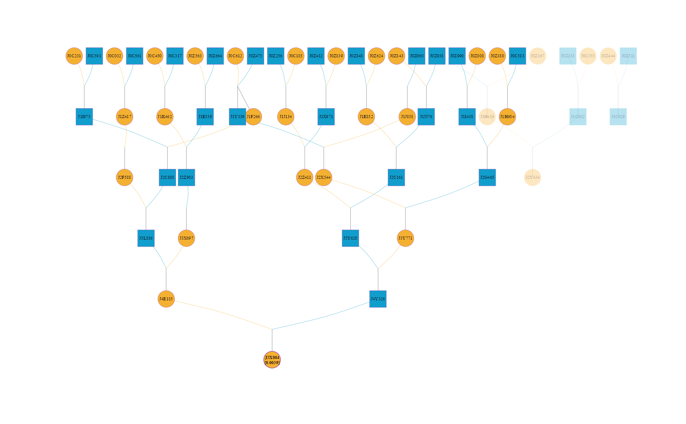

visPedigree is a comprehensive toolkit for the standardization, statistical analysis, and fast visualization of animal and plant pedigrees. It robustly handles complex mating systems, such as selfing and monoecious reproduction. Using optimized C++ algorithms, the data.table framework, and igraph, it supports pedigree analysis, relationship matrix calculation, and scalable graph and matrix displays for large pedigrees.

Key Features
- Pedigree Standardization: Standardizes pedigree records, handles selfing and monoecious reproduction, detects pedigree loops, prepares pedigrees for downstream analysis, and efficiently splits disconnected sub-populations.
- Comprehensive Pedigree Analysis: Computes pedigree summaries, equivalent complete generations, generation intervals, effective population size, founder and ancestor contributions, partial inbreeding, relationship matrices, and inbreeding coefficients.
- High-Throughput Matrix Calculation: Calculates Additive (A), Dominance (D), and Additive-by-Additive (AA) relationship matrices and their inverses.
-
Advanced Visualization: Uses
igraphto generate scalable pedigree graphs, matrix displays, and compact representations for large full-sib families. -
High Performance: Uses optimized C++ algorithms together with
data.tablefor efficient analysis of large pedigrees.
Installation
Stable version from CRAN
install.packages("visPedigree")Quick Start
library(visPedigree)
# Example 1: Tidy and visualize a small pedigree
# Use compact = TRUE to condense full-sib groups into a single family node (square)
# labeled with the group size (e.g., "2"), keeping the graph clean and legible.
cands <- c("Y", "Z1", "Z2")
small_ped |>
tidyped(cand = cands) |>
visped(compact = TRUE)
# Example 2: Relationship Matrices (v1.0.0+)
# Compute the additive relationship matrix (A) using high-performance C++ algorithms.
# Use compact = TRUE to accelerate calculation for pedigrees with large full-sib families.
mat_a <- simple_ped |> tidyped() |> pedmat(method = "A", compact = TRUE)
# Visualize the relationship matrix as a heatmap with histograms
vismat(mat_a)
# Example 3: Inbreeding & Highlighting
# Calculate inbreeding coefficients (f) and display them on the graph (e.g., "ID (0.05)").
# Specific individuals can be highlighted to track their inheritance paths.
simple_ped |>
tidyped(inbreed = TRUE) |>
visped(highlight = "J5X804", trace = "up", showf = TRUE, compact = TRUE)
# Example 4: Pedigree Analysis (v1.3.4+)
# Summarize pedigree structure
tp <- tidyped(big_family_size_ped)
tp |>
pedstats(timevar="Year")
# Summarize diversity-related indicators
ref_ind <- tp[Gen == max(Gen), Ind]
tp |>
pediv(reference = ref_ind)
# Example 5: Pedigree Splitting
# Automatically split the pedigree into independent sub-populations (connected groups).
# Each group is returned as a standalone tidyped object for separate analysis.
split_list <- simple_ped |> tidyped() |> splitped()
summary(split_list[[1]])Citation
Luan Sheng (2026). visPedigree: Tidying, Analysis, and Fast Visualization of Animal and Plant Pedigrees. R package version 1.3.4, https://github.com/luansheng/visPedigree.